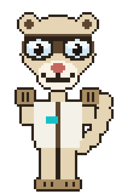

The written tests and the full queue behind them, in one place.
The most recommended options strategy on the internet, run properly.
Read the test →High win rate, defined risk, and no need to be right about direction. Allegedly.
Read the test →Falling markets are supposed to pay you twice. We checked whether they do.
Read the test →
The ferret"Tell me what everyone keeps repeating, and I'll go and check it."
If there's a strategy you keep seeing recommended and you've never seen anyone actually check it, tell us. Requests with a specific claim attached — a delta, a tenor, a moving average, a rule — get tested first, because they're the ones we can test fairly.
Request a test